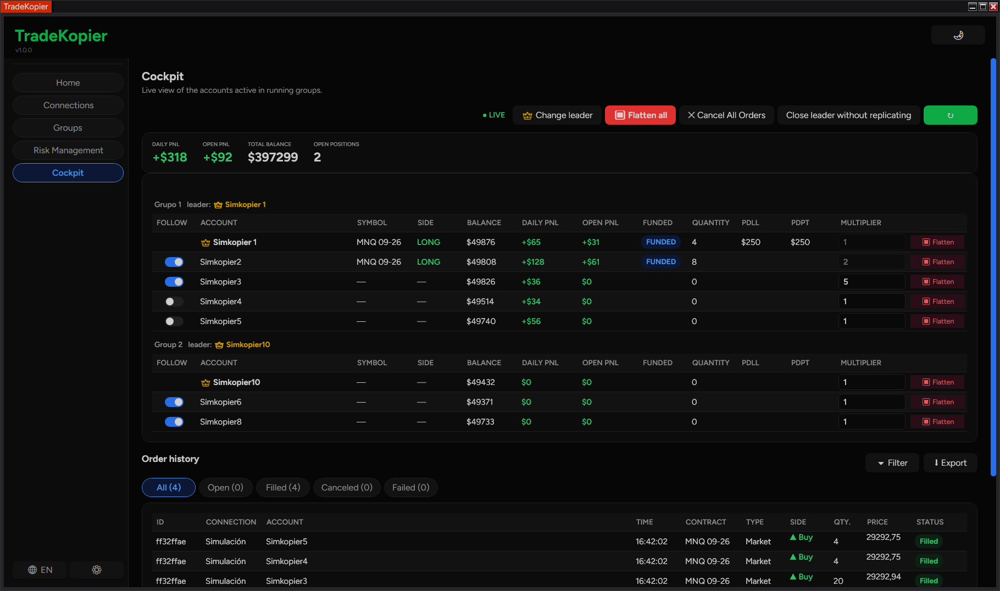

TradeKopier replica automáticamente cada entrada, salida y protección de tu cuenta maestra hacia todas tus cuentas esclavas — sin límite de cuentas, sin límite de conexiones.
Disponible en modo oscuro y modo claro — elige el que prefieras.

Modo oscuro, con varios grupos corriendo al mismo tiempo.
Pensado para traders con múltiples cuentas de prop firm o fondeo que quieren operar una vez y replicar en todas — sin los límites de otros copiadores.
Conecta y opera tantas cuentas y brokers distintos como necesites al mismo tiempo — compatible con TradingView, Tradovate y todas las conexiones que permite NinjaTrader 8, además de cualquier sitio donde ejecutes tus operaciones. A diferencia de otros copiadores que cobran más por cada conexión adicional.
Funciona sin problemas con cualquier empresa de fondeo (prop firm) que uses — sin restricciones ni conflictos de compatibilidad.
Cada entrada y salida de tu cuenta maestra se replica al instante, sin importar si operas desde el Chart Trader, un ATM o TradingView.
Ajusta el tamaño de la posición de forma independiente en cada esclava — perfecto para cuentas con distinto tamaño de capital.
Replica el Stop Loss y Take Profit reales que pones en la maestra, a la misma distancia y escalados por cuenta — no una red de seguridad genérica.
Panel de control con el estado de cada cuenta, PnL del día, posiciones abiertas y flatten de emergencia con un clic.
Deshabilita cualquier cuenta desde Conexiones y queda excluida de toda réplica al instante, esté donde esté configurada.
Nuestro equipo está disponible las 24 horas del día, los 7 días de la semana, para ayudarte con cualquier duda o incidencia.
Funciona directamente en tu propio ordenador — no necesitas alquilar un VPS ni pagar de más solo para mantener el copiador corriendo.
Configura el límite de pérdida diaria (PDLL) y el objetivo de beneficio (PDPT) por cada cuenta. TradeKopier vigila en tiempo real y actúa antes de que sea tarde.
Copia en tantas cuentas fondeadas y reales como operes, sin cargos por cuenta adicional.
Los controles de riesgo mantienen tus evaluaciones y cuentas fondeadas dentro de la normativa en cada señal.
Integrado directamente en NinjaTrader 8 — sin plugins externos ni capas intermedias.
Tu conexión al bróker permanece en tu propio equipo — nunca guardamos tus contraseñas.
La ayuda viene directamente del equipo que construye y mantiene TradeKopier.
Todas las funciones incluidas en los 3 planes. Cuanto más tiempo elijas, más ahorras.
Pruébalo sin compromiso, cancela cuando quieras.
El equilibrio perfecto entre ahorro y flexibilidad.
Market, limit, stop, bracket, OCO — capturamos la orden directamente desde NinjaTrader, no simulando clics en la interfaz.
Tamaño de la maestra × multiplicador de cada esclava, redondeado al contrato entero más cercano. Puedes forzar micros o minis por cuenta.
Cada esclava se envía a su propia conexión de forma independiente — sin cuello de botella ni bloqueos compartidos. Todas las cuentas operan a la vez.
Elige tu plan y recibe tu clave de licencia al instante por email.
Tools → Import → NinjaScript Add-On, selecciona el archivo, reinicia NinjaTrader.
Introduce tu email y clave, elige tu maestra y esclavas, y empieza a replicar.
Vídeo explicativo de instalación.
Un único TradeKopier, todas las funciones, sin límite de cuentas ni conexiones. Empieza cuando quieras.
Ver planes